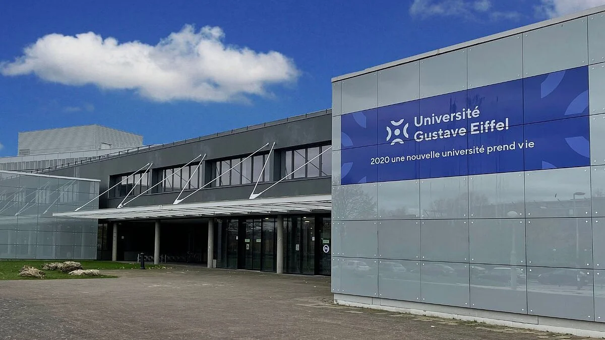

La seule formation publique d’ingénieur alliant arts et sciences
Associant esprit créatif à compétences scientifiques, l’IMAC forme des professionnels dans les domaines du web, du multimédia, de l’audiovisuel, de la communication. Notre formation intègre l'ESIEE Paris, l'école de l'innovation technologique.
Formation de l’ESIEE Paris

Au sein de l’Université Gustave Eiffel